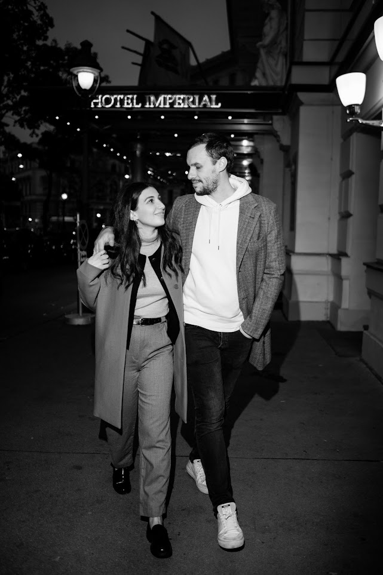

Our Story
Our love story began seven years ago in Athens. What started as a first date on a rooftop bar has blossomed into the greatest adventure of our lives.
From our first years of traveling for our long distance relationship, we upgraded to sharing a home and to traveling the world together. Every moment has been filled with laughter, growth, and endless love. We've supported each other through challenges and celebrated countless joys.
Now, we can't wait to celebrate our marriage together with all of you - the friends and family who have made our story even more beautiful.
